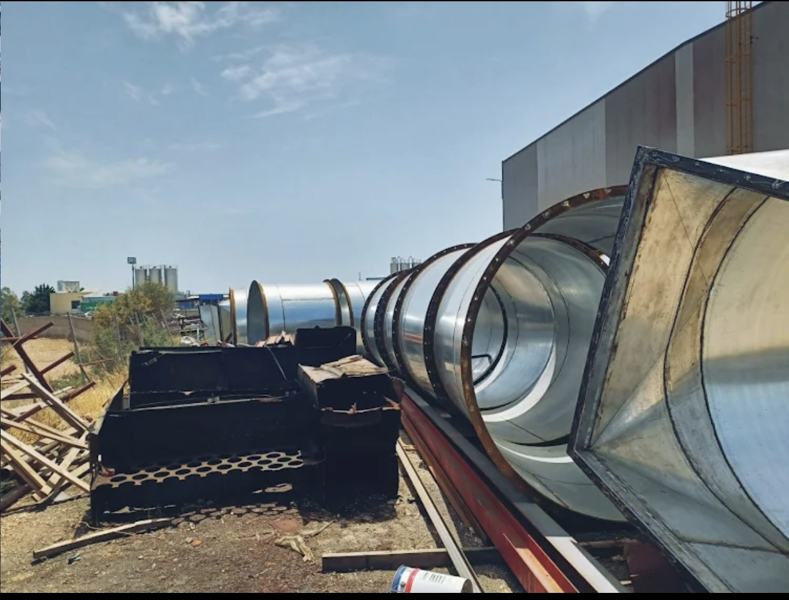
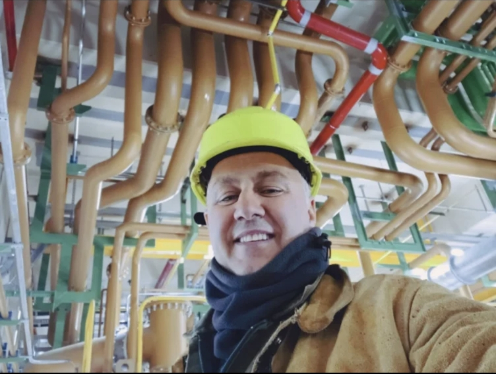
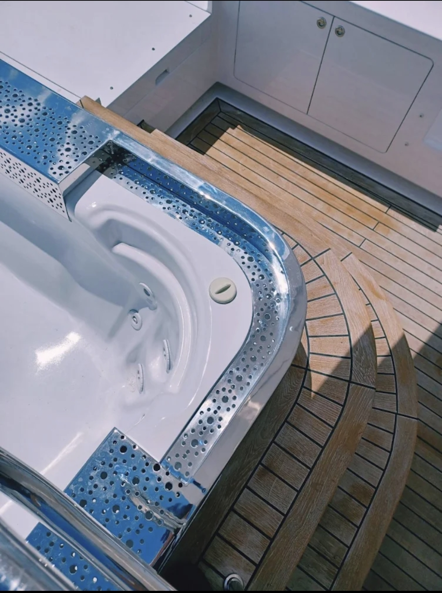
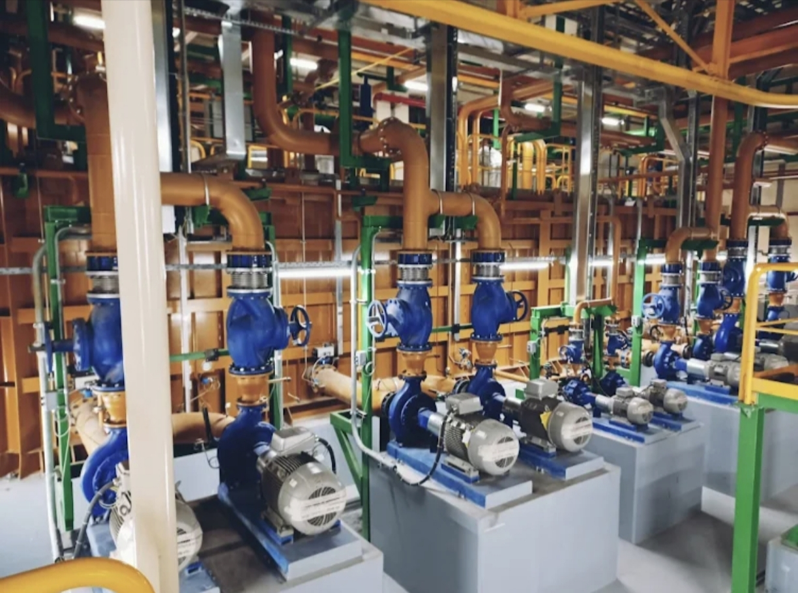
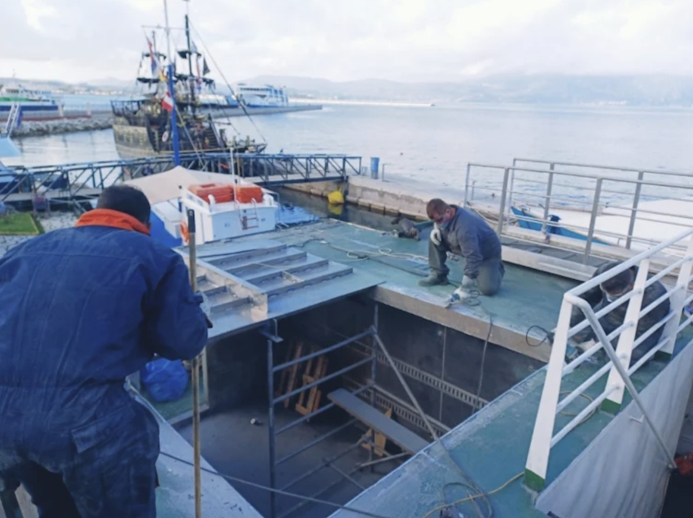

Βιομηχανικές και ναυπηγικές μεταλλικές κατασκευές, acoustic solutions και custom fabrication για έργα που απαιτούν ακρίβεια, αντοχή και αξιοπιστία.
Λύσεις για βιομηχανία, ναυτιλία και ειδικές μεταλλικές εφαρμογές.

Εξειδικευμένες acoustic λύσεις για βιομηχανικές εφαρμογές.
Περισσότερα →
Σωληνώσεις, ναυπηγικές εργασίες και μεταλλικά έργα.
Δείτε έργα →
Custom μεταλλικές σκάλες για κάθε έργο.
Περισσότερα →
Μεταλλικές πέργκολες για επαγγελματικούς και ιδιωτικούς χώρους.
Περισσότερα →
Custom βάσεις, εξαρτήματα και τεχνικές μεταλλικές λύσεις.
Περισσότερα →Στείλτε σχέδιο, διαστάσεις ή τεχνική απαίτηση.
Ζητήστε προσφορά →Κάθε έργο αντιμετωπίζεται ως ξεχωριστή τεχνική απαίτηση.